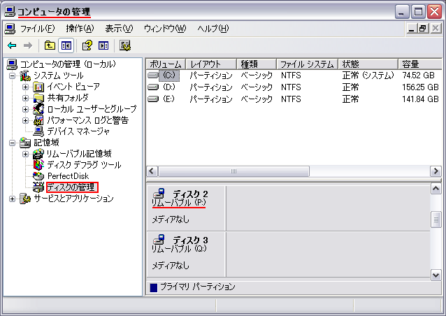
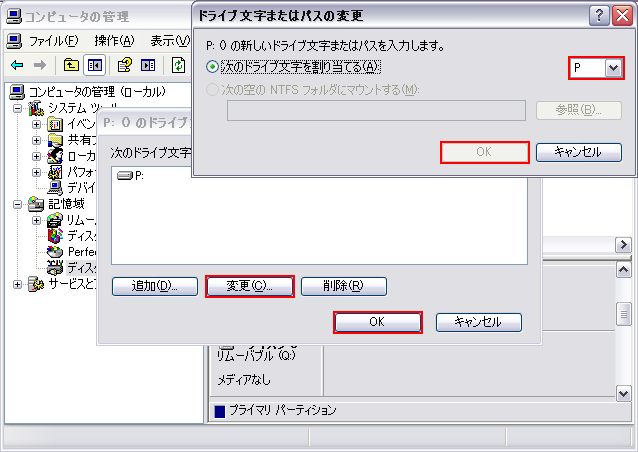
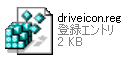
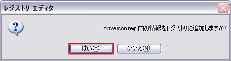
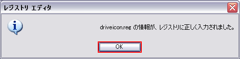

カードリーダのアイコンをカスタマイズ
デジタルカメラや携帯電話に必要不可欠なメモリーカードですが，その種類はとても多く， PC用のカードリーダが対応するメディアの種類も年々増えています． カードリーダをPCに接続すると，多くの場合は「リムーバブル ディスク」という名前のドライブが マイ コンピュータ上に複数表示されます．ドライブ名どころかアイコンも全て同じです． わかりにくいと感じたこと，間違えてアイコンをクリックしてしまったことはありませんか？ ここではカードリーダのドライブ名とアイコンを変更して，使い易く，見栄えよくする方法を紹介したいと思います．
また，カードリーダによっては，製造元が本ページで紹介する内容と同等の機能を提供するユーティリティソフトウェアを配布している場合があります．事前に確認してみてください．
下記の環境で動作を確認しておりますが，掲載内容については各自の責任のうえでご活用願います．
| OS |
Microsoft Windows XP Professional Service Pack 3 （システム領域はC:\） |
|---|---|
| カードリーダ | Y-E DATA YD-8V06 |
ここで紹介する方法を適用した後のマイ コンピュータの表示です．
1. ドライブ文字を変更する
ドライブ名とアイコンはドライブ文字に関連付けて設定します． このため，ドライブ文字をわかりやすく整理しておくことをおすすめします．
「コントロールパネル」-「管理ツール」-「コンピュータの管理」-「ディスクの管理」の順に開きます． ドライブの一覧が表示されるので，カードリーダに該当するドライブを選択して右クリックし， 「ドライブ文字とパスの変更」をクリックします．
 「変更」をクリックすると別ウィンドウが開き，ドライブ文字を変更することができます． SDカードリーダは「S:」にするなど，ドライブ文字でも判別できるようにしておくと良いかもしれません． 以降では下記のように設定したと仮定します．
| コンパクトフラッシュ，マイクロドライブ | P: |
|---|---|
| スマートメディア，xD-Pictureカード | Q: |
| メモリースティック | R: |
| SDカード，マルチメディアカード | S: |
2. アイコンを選ぶ
Windows XPでは，shell32.dllにコンパクトフラッシュ，スマートメディアおよびSDカードのアイコンが標準で用意されています． 今回はこれら3つのアイコンを活用しようと思います．各アイコンのパスは下記の通りです．
| コンパクトフラッシュ | %SystemRoot%\\system32\\SHELL32.DLL,189 |
|---|---|
| スマートメディア | %SystemRoot%\\system32\\SHELL32.DLL,194 |
| SDカード | %SystemRoot%\\system32\\SHELL32.DLL,193 |
shell32.dllにはメモリースティックのアイコンがありません． しかし，SONY VAIOや，メモリースティックを使用するソフトウェアをインストールしている環境下には snymsico.dllというファイルが存在する可能性があります． このファイルには，メモリースティックのアイコンが用意されています．私の場合は偶然このファイルが存在しました． （予想ですが，BeatJamをインストールしているからかもしれません．間違っていたらごめんなさい．） 検索すると，それらしきファイルを配布しているWebページも出てきます．アイコンのパスは以下の通りです．
| メモリースティック（ブルー） | %SystemRoot%\\snymsico.dll,0 |
|---|---|
| メモリースティック（グレー） | %SystemRoot%\\snymsico.dll,1 |
インターネット上から好みのアイコンを探したり，自作しても良いと思います． とりあえず，必要な種類だけアイコンを用意しましょう．
3. レジストリファイル（登録エントリ）を作成する
レジストリファイルを作成します． 下記の例をテキストエディタ（サクラエディタ，メモ帳など）上にコピーし，編集してください． 緑色がドライブ文字，赤色がアイコンのパス， 橙色がドライブ名です． 編集が終わったら，拡張子を.regにして任意の場所に保存します．
|
REGEDIT4 [HKEY_LOCAL_MACHINE\SOFTWARE\Microsoft\Windows\CurrentVersion\Explorer\DriveIcons] [HKEY_LOCAL_MACHINE\SOFTWARE\Microsoft\Windows\CurrentVersion\Explorer\DriveIcons\S] [HKEY_LOCAL_MACHINE\SOFTWARE\Microsoft\Windows\CurrentVersion\Explorer\DriveIcons\S\DefaultIcon] @="%SystemRoot%\\system32\\SHELL32.DLL,193" [HKEY_LOCAL_MACHINE\SOFTWARE\Microsoft\Windows\CurrentVersion\Explorer\DriveIcons\S\DefaultLabel] @="SDカード" [HKEY_LOCAL_MACHINE\SOFTWARE\Microsoft\Windows\CurrentVersion\Explorer\DriveIcons\Q] [HKEY_LOCAL_MACHINE\SOFTWARE\Microsoft\Windows\CurrentVersion\Explorer\DriveIcons\Q\DefaultIcon] @="%SystemRoot%\\system32\\SHELL32.DLL,194" [HKEY_LOCAL_MACHINE\SOFTWARE\Microsoft\Windows\CurrentVersion\Explorer\DriveIcons\Q\DefaultLabel] @="xD-Pictureカード" [HKEY_LOCAL_MACHINE\SOFTWARE\Microsoft\Windows\CurrentVersion\Explorer\DriveIcons\P] [HKEY_LOCAL_MACHINE\SOFTWARE\Microsoft\Windows\CurrentVersion\Explorer\DriveIcons\P\DefaultIcon] @="%SystemRoot%\\system32\\SHELL32.DLL,189" [HKEY_LOCAL_MACHINE\SOFTWARE\Microsoft\Windows\CurrentVersion\Explorer\DriveIcons\P\DefaultLabel] @="CompactFlash" [HKEY_LOCAL_MACHINE\SOFTWARE\Microsoft\Windows\CurrentVersion\Explorer\DriveIcons\R] [HKEY_LOCAL_MACHINE\SOFTWARE\Microsoft\Windows\CurrentVersion\Explorer\DriveIcons\R\DefaultIcon] @="%SystemRoot%\\snymsico.dll,0" [HKEY_LOCAL_MACHINE\SOFTWARE\Microsoft\Windows\CurrentVersion\Explorer\DriveIcons\R\DefaultLabel] @="MemoryStick" |
4. レジストリ変更の実行
[3]で作成したレジストリファイルをダブルクリックします． 「情報をレジストリに追加しますか?」と聞いてくるので「はい」をクリックします． 「情報が、レジストリに正しく入力されました。」と出れば成功，作業は終了です． マイ コンピュータを開き，ドライブ名やアイコンが正しく変更されているか確認してください． 変更がすぐに反映されない場合があります． 以前と変化がない場合は，キーボードのF5キーを押して最新の情報に更新してみてください． F5キーを押しても変化がない場合，思ったように設定できていない場合はレジストリファイルの記述ミスが考えられます． 再度確認してみてください．
  